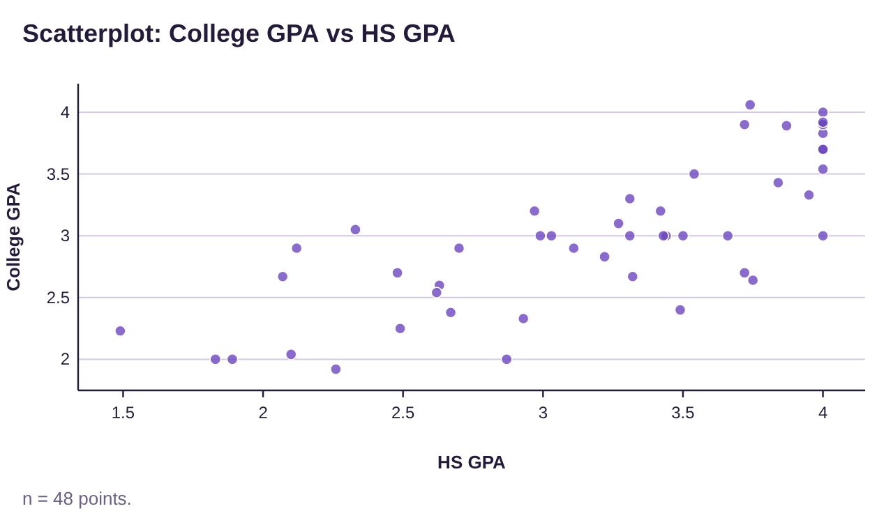
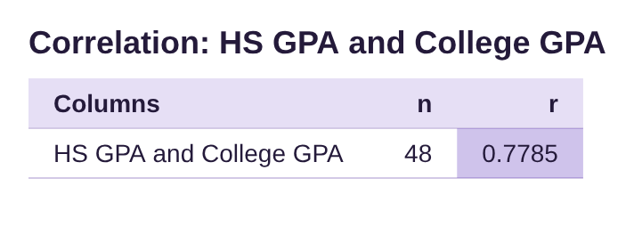
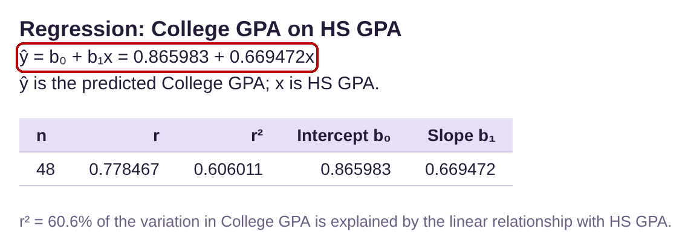
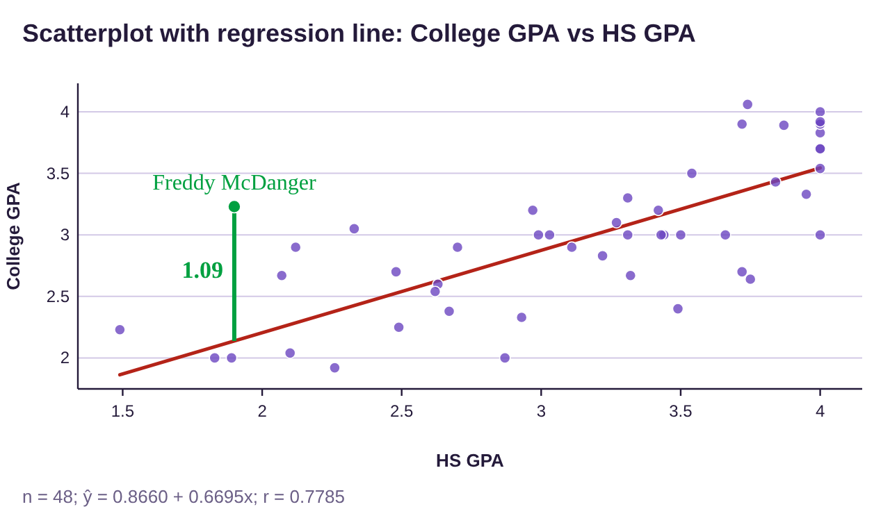
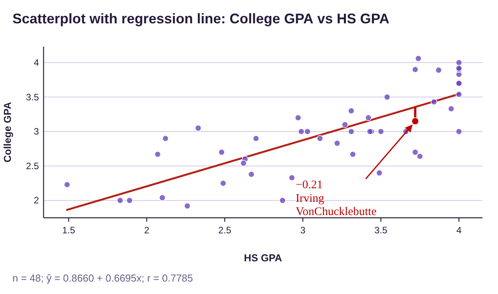
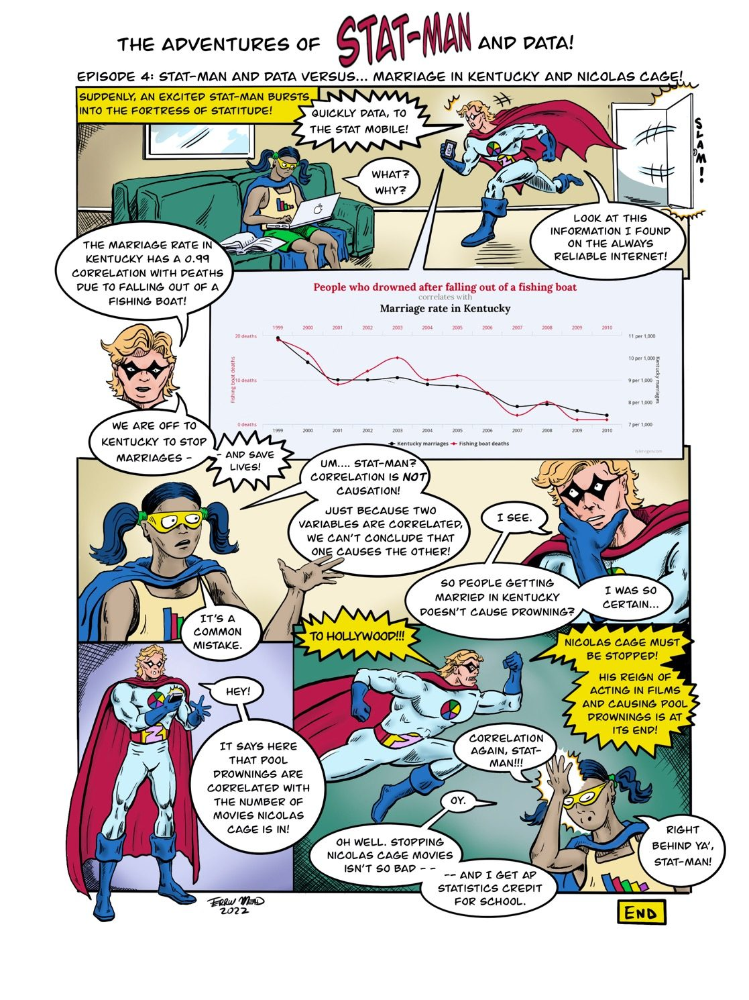

Section 4.4: Summary of Bivariate Data
Learning Objectives
1.Use and interpret scatterplots, correlation, significance, regression, predictions, residuals, and the coefficient of determination to analyze bivariate data.
This section puts all the ideas we have seen in chapter 4 together in one example.
Summary of Bivariate Data
1.We use a scatterplot to view possible relationships between variables. Do the data show a positive (increasing) or negative (decreasing) trend?
2.We use correlation to measure linearity. Find the number of data points n and the critical value CV from the critical values table in section 4.1. If , the correlation is significant, and we can go to step (3) using regression
3.Compute the regression line using STATBELT Utility (or other technology). You may plug in values for x (the explanatory variable) to make predictions for y (the response variable) when x is between X-Min and X-Max, or very close.
4.A residual is the difference between what is seen in the data and the predicted value from the trend. The formula is (the actual observed y-value from the data – the predicated y-value from regression). Positive residuals mean the data points are above the trend line, while negative residuals mean the data points are below the trend line.
5.The Coefficient of Determination is the correlation squared, denoted . It gives the proportion of variation in the y (response) variable that is “explained” by the x (explanatory) variable. It tells us how much power knowing the x-value has in predicting the y-value.
Table 5: Critical Values Table for Correlation
n | Critical Value | n | Critical Value | |
|---|---|---|---|---|
3 | 0.997 | 27 | 0.381 | |
4 | 0.950 | 28 | 0.374 | |
5 | 0.878 | 29 | 0.367 | |
6 | 0.811 | 30 | 0.361 | |
7 | 0.754 | 31 | 0.355 | |
8 | 0.707 | 32 | 0.349 | |
9 | 0.666 | 33 | 0.344 | |
10 | 0.632 | 34 | 0.339 | |
11 | 0.602 | 35 | 0.334 | |
12 | 0.576 | 36 | 0.329 | |
13 | 0.553 | 37 | 0.325 | |
14 | 0.532 | 38 | 0.320 | |
15 | 0.514 | 39 | 0.316 | |
16 | 0.497 | 40 | 0.312 | |
17 | 0.482 | 41 | 0.308 | |
18 | 0.468 | 42 | 0.304 | |
19 | 0.456 | 43 | 0.301 | |
20 | 0.444 | 44 | 0.297 | |
21 | 0.433 | 45 | 0.294 | |
22 | 0.423 | 46 | 0.291 | |
23 | 0.413 | 47 | 0.288 | |
24 | 0.404 | 48 | 0.285 | |
25 | 0.396 | 49 | 0.282 | |
26 | 0.388 | 50 | 0.279 |
Example 1: Putting it all together!
A study was conducted that collected information from 48 high school students who later attended college. The data consisted of the students’ high school grade point averages (HS GPA) and college grade point averages (College GPA). The data can be found in Table 6, or you can copy the high school and college GPA data (opens in a new tab). Perform each of the following.
a)Make a scatterplot for the data using HS GPA as the explanatory variable and College GPA as the response. Give a preliminary description of the relationship between variables.
b)Find the correlation. Is it significant? Is it appropriate to use regression analysis?
c)Find the least-squares regression line. Interpret the slope and y-intercept of the line in context.
d)What college GPA does the regression equation predict for a student who had a 3.5 HS GPA?
e)Can the regression model be used to predict a college GPA for a student who had a 0.5 HS GPA? Can it be used to predict the college GPA for a student who had a 4.5 HS GPA?
f)Freddy McDanger had a high school GPA of 1.9 because he didn’t go to school very often. But after working in the fast-food industry for a year, he decided to give college a chance. He found he loved learning and earned a 3.23 college GPA. How far above average was a 3.23 college GPA for students who had a 1.9 HS GPA?
g)Irving VonChucklebutte had a high school GPA of 3.72. When he went to college he got a job, a girlfriend, a video game system, and earned a 3.15 College GPA. Was this above or below average for students with a 3.72 HS GPA?
h)What is the coefficient of determination? What is its interpretation in this context?
Table 6: High School and College Grade Point Averages | |||||||
|---|---|---|---|---|---|---|---|
HS GPA | College GPA | HS GPA | College GPA | HS GPA | College GPA | HS GPA | College GPA |
3.87 | 3.89 | 2.26 | 1.92 | 3.72 | 2.7 | 2.1 | 2.04 |
4 | 3.9 | 3.27 | 3.1 | 2.33 | 3.05 | 2.48 | 2.7 |
2.87 | 2 | 3.11 | 2.9 | 2.93 | 2.33 | 3.74 | 4.06 |
2.99 | 3 | 1.83 | 2 | 3.66 | 3 | 1.49 | 2.23 |
3.22 | 2.83 | 3.84 | 3.43 | 3.49 | 2.4 | 1.89 | 2 |
3.32 | 2.67 | 4 | 4 | 3.44 | 3 | 3.31 | 3 |
2.67 | 2.38 | 3.43 | 3 | 2.49 | 2.25 | 4 | 3.7 |
4 | 3.83 | 3.31 | 3.3 | 2.7 | 2.9 | 3.75 | 2.64 |
3.54 | 3.5 | 2.97 | 3.2 | 3.95 | 3.33 | 3.5 | 3 |
2.63 | 2.6 | 4 | 3.7 | 3.72 | 3.9 | 2.07 | 2.67 |
2.62 | 2.54 | 2.12 | 2.9 | 4 | 3.9 | 3.42 | 3.2 |
4 | 3 | 3.03 | 3 | 4 | 3.54 | 4 | 3.92 |
Solution:To begin, either type, or copy and paste the data into two columns of STATBELT Utility (Table 6 has four pairs of columns, so paste each pair under the one before). Make sure that you label the columns HS GPA and College GPA. You can save the data as well (Data → Import or export data → Export data as CSV) in case you wish to use it later.
a)Make a scatterplot for the data using HS GPA as the explanatory variable and College GPA as the response. Give a preliminary description of the relationship between variables.
Select Graphs → Scatterplot, and choose HS GPA for “Explanatory variable (x)” and College GPA for “Response variable (y).” Click “Open graph in a new window.” The scatterplot is shown in figure 4.37.

Figure 4.37: HS GPA and College GPA scatterplot.
It appears that there is a moderate positive correlation between high school grade point average and college grade point average.
b)Find the correlation. Is it significant? Is it appropriate to use regression analysis?
Select Descriptive Statistics → Correlation. Check both variables and click “Show results in a new window.” The correlation is shown in figure 4.38.

Figure 4.38: Correlation between HS GPA and College GPA.
The correlation is . There were 48 data pairs, so we look at the critical values chart to find the critical value, CV. For n = 48, the critical value is CV = 0.285
n | Critical Value |
|---|---|
46 | 0.291 |
47 | 0.288 |
48 | 0.285 |
49 | 0.282 |
50 | 0.279 |
Since is larger than CV = 0.285, the correlation is significant. Therefore, using regression is appropriate. We can use a linear model to make predictions.
c)Find the least-squares regression line. Interpret the slope and y-intercept of the line in context.
Select Descriptive Statistics → Regression. Then choose HS GPA for “Explanatory variable (x)” and College GPA for “Response variable (y),” and click “Show results in a new window.” The regression output is shown in figure 4.39.

Figure 4.39: Regression results for HS GPA and College GPA.
The least squares regression line is where represents the predicted college GPA for a student with high school GPA equal to x.
The y-intercept is 0.866, which is the predicted college GPA for a student who had a high school GPA equal to zero. That is outside the scope of the model since all the students had high school GPAs that were between 1.49 and 4.0.
The slope of the regression line is 0.6695, or about 0.67. If a high school GPA were to increase by 1 grade point, the corresponding college GPA would increase by 0.67 grade points, on average. In other words, the difference between a 2.5 and a 3.5 high school GPA is one grade point, which will correspond to a 0.67 point difference in college GPA.
d)What college GPA does the regression equation predict for a student who had a 3.5 HS GPA?
To predict the college GPA for student with a 3.5 high school GPA, plug into the equation.
So, students who earn a 3.5 GPA in high school will get, on average, a 3.21 GPA in college.
e)Can the regression model be used to predict a college GPA for a student who had a 0.5 HS GPA? Can it be used to predict the college GPA for a student who had a 4.5 HS GPA?
No. The minimum x-value is 1.49, and the maximum is 4.0. We can use the model to make predictions for college grade point averages only for high school grade point averages between 1.49 and 4.0, or very close.
f)Freddy McDanger had a high school GPA of 1.9 because he didn’t go to school very often. But after working in the fast-food industry for a year, he decided to give college a chance. He found he loved learning and earned a 3.23 college GPA. How far above average was a 3.23 college GPA for students who had a 1.9 HS GPA?
This question is asking us to find the residual for a data value with HS GPA = 1.9 and College GPA = 3.23. The observed value is 3.23. We must use the regression equation again to find the predicted college GPA for a HS GPA = 1.9. So, plug into the equation.
Photo by May Gauthier (opens in a new tab) on Unsplash (opens in a new tab)
So, students who earn a 1.9 GPA in high school will get, on average, a 2.14 GPA in college. That means that Freddy did much better than predicted! How much better?
The residual is .
So,
Since the residual is positive, Freddy had a college GPA that was 1.09 grade points higher than the average college GPA for students with a 1.9 high school GPA. See figure 4.40.

Figure 4.40: Scatterplot, regression line, and residual for Freddy McDanger.
g)Irving VonChucklebutte had a high school GPA of 3.72. When he went to college he got a job, a girlfriend, a video game system, and earned a 3.15 College GPA. Was this above or below average for students with a 3.72 HS GPA?
Photo by Glenn Carstens-Peters (opens in a new tab) on Unsplash (opens in a new tab)
Again, we are asked to find a residual, this time for a data value with HS GPA = 3.72 and College GPA = 3.15. The observed value is 3.15. We must use the regression equation again to find the predicted college GPA for a HS GPA = 3.72. So, plug
into the equation.
So, students who earn a 3.72 GPA in high school will get, on average, a 3.36 GPA in college. So, Irving did a little worse than predicted, but not much worse.
The residual is
Since the residual is negative, Irving has a slightly lower than average college GPA for students who had a 3.72 high school GPA. But is sounds like he was making money and having fun, so that small drop in GPA might be okay with him! See figure 4.41.

Figure 4.41: Scatterplot, regression line, and residual for Irving VonChucklebutte.
h)What is the coefficient of determination? What is its interpretation in this context?
From the regression output in figure 4.39, we can see that the coefficient of determination (given as r² in the output) is approximately . That means that high school GPA explains about of the variation in college grade point averages. That means that 39.4% of the variation in college grade point average is not explained by high school grades. The remaining variation occurs for other reasons, such as content of courses, textbook or materials cost, instructors, work schedules, living situations, potential distractions, etc.

Photo by Logan Isbell (opens in a new tab) on Unsplash (opens in a new tab)

Text version of the comic
The Adventures of Stat-Man and Data! Episode 4: Stat-Man and Data versus… Marriage in Kentucky and Nicolas Cage!
Caption: Suddenly, an excited Stat-Man bursts into the Fortress of Statitude!
Stat-Man runs in through the door (SLAM!) holding his phone. Data is sitting on the couch with a laptop.
Stat-Man: Quickly Data, to the Stat Mobile!
Data: What? Why?
Stat-Man: Look at this information I found on the always reliable Internet!
A graph from Tyler Vigen’s Spurious Correlations: “People who drowned after falling out of a fishing boat correlates with Marriage rate in Kentucky,” 1999 to 2010. Both lines fall together.
Stat-Man: The marriage rate in Kentucky has a 0.99 correlation with deaths due to falling out of a fishing boat!
Stat-Man: We are off to Kentucky to stop marriages –
Stat-Man: – and save lives!
Data: Um…. Stat-Man? Correlation is NOT causation!
Data: Just because two variables are correlated, we can’t conclude that one causes the other!
Stat-Man (holding his chin): I see.
Stat-Man: So people getting married in Kentucky doesn’t cause drowning?
Stat-Man: I was so certain…
Data: It’s a common mistake.
Stat-Man looks at his phone.
Stat-Man: Hey!
Stat-Man: It says here that pool drownings are correlated with the number of movies Nicolas Cage is in!
Stat-Man flies off.
Stat-Man: To Hollywood!!!
Stat-Man: Nicolas Cage must be stopped! His reign of acting in films and causing pool drownings is at its end!
Data (hand on her forehead): Correlation again, Stat-Man!!!
Data: Oy.
Data: Oh well. Stopping Nicolas Cage movies isn’t so bad – –
Data: – – and I get AP Statistics credit for school.
Data: Right behind ya’, Stat-Man!
Caption: End. Signed Terrill Mead 2022.